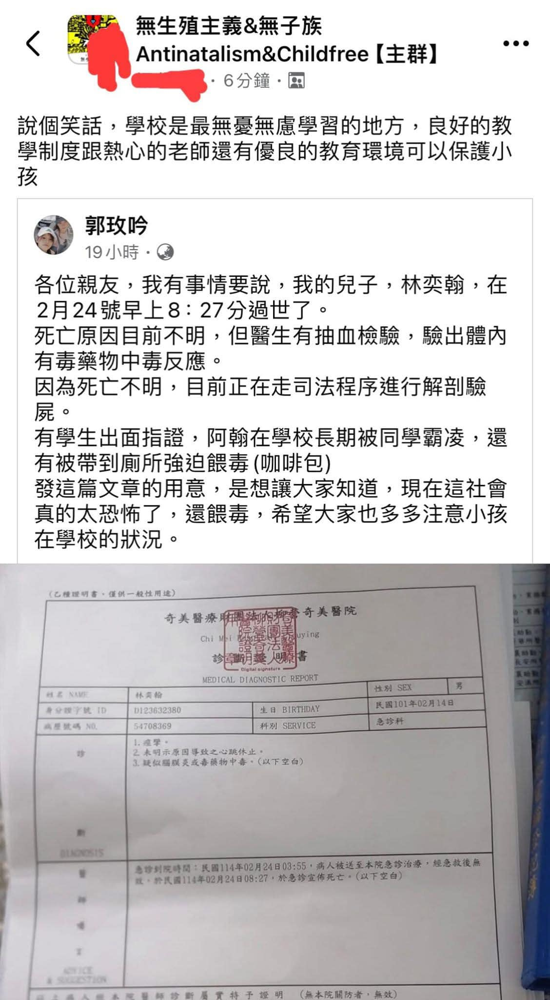
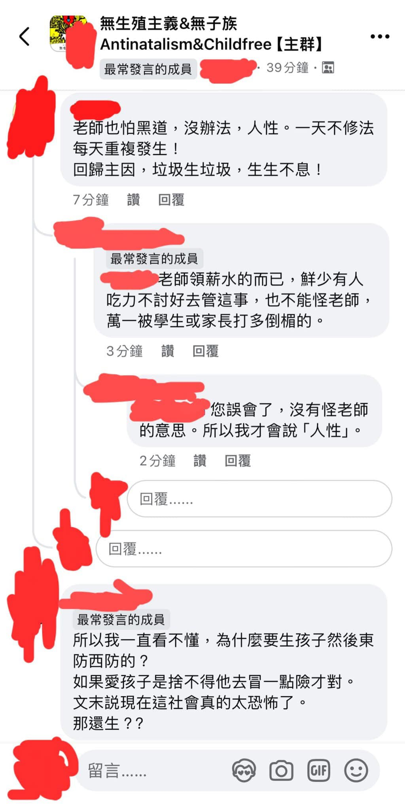
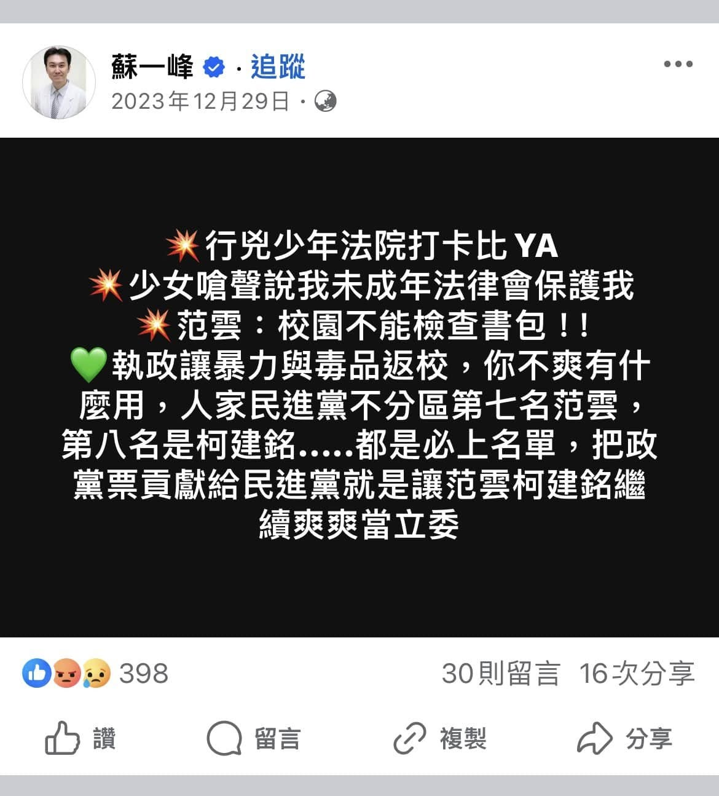
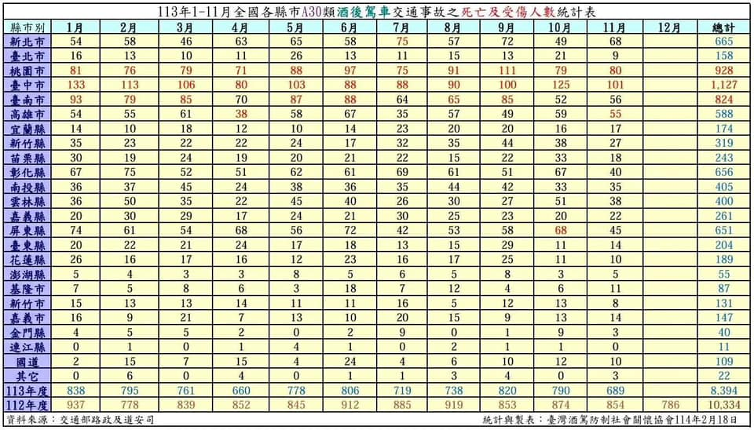
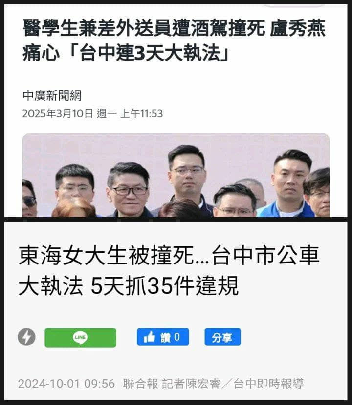
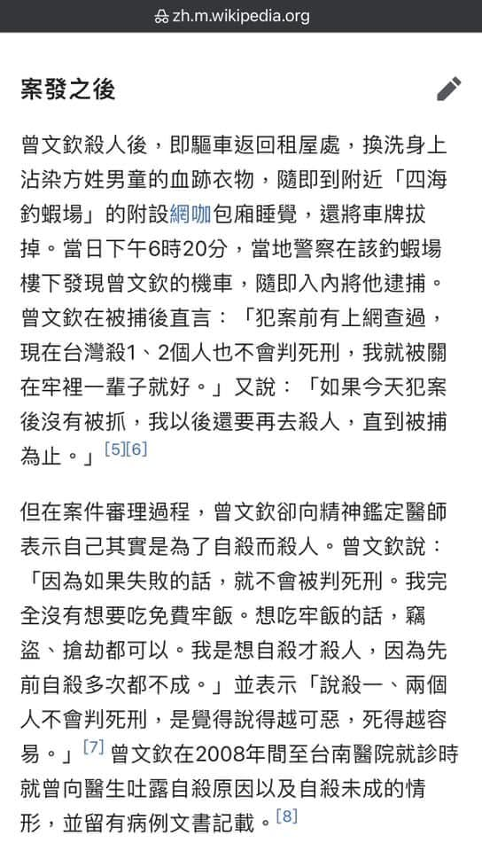
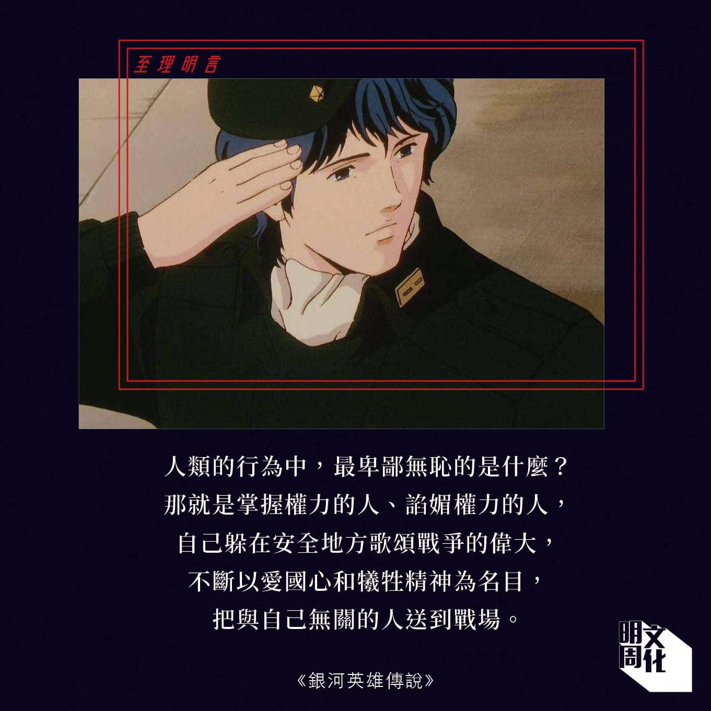

彷彿吃苦是什麼高尚的行為並且在成長過程中沒受過傷害就是一種罪過似的，而不照著這些觀念活的人就會被他們扣上不合群、自私的標籤，這樣這些老韭菜才會乖乖地不斷繁衍新韭菜給他們收割。
甚至他們還會畫大餅給這些韭菜：「你不生孩子的話，你老了誰照顧你、你死的時候誰替你收屍？」、「孩子將來會孝順你的」
然而，越來越多人意識到再怎麼辛苦工作、生再多小孩並養育他們，真正便宜到的始終是這些掌權的人而不是孩子的父母，而且有蠻多白髮人送黑髮人的真實案例加上這些案子中護航加害者的不公平判決讓這些韭菜意識到生小孩並不能保障晚年生活，這使得越來越多人看透這些催生的權貴們虛偽又醜陋的嘴臉，所以少子化的出現是必然的。



坦白講，對這些催生的人而言，孩子不是孩子，而是奴隸、納稅人，甚至在戰爭期間去前線替他們挨子彈的人肉盾牌，所以少子化才會讓他們這麼焦慮
家裡有養寵物的人類都深知製造生命後要付出的代價有多大所以會帶寵物去獸醫診所做結紮手術，更何況是人類把同類生出來這件事，所以如果掌權者真的站在勞動階層的處境思考的話，他們就不會這麼瘋狂地催生了，特別是在這個房價和物價都很高但是社會安全網十分脆弱的年代。
因此，每當新聞報導少子化帶來多大的負面影響且政客們打著「要顧全大局」的名義呼籲國民生孩子的時候，他們的話翻成白話文就是：「沒有足夠的奴隸，誰來養活我們？我們的地位和生活品質又要如何維持下去？」、「沒有足夠的兵源，戰爭爆發的時候誰去前線替我們擋砲火？」



更過分的是，某些政客並不想親自承擔育兒的艱辛和孩子在成長過程中受到傷害的風險，卻更擔心人礦不夠挖而試圖將這些痛苦甩鍋給人民，自己則快活去
就拿我國的前總統蔡英文和現任南韓總統尹錫悅為例好了，蔡英文在執政期間曾說過多生小孩可以讓國家更強盛還表示她很在乎總統府的員工有沒有小孩但她自己卻一個孩子都沒有，而呼籲人民再不生孩子國家就要滅亡的尹錫悅和他老婆不僅沒有小孩還養一堆貓和狗代替小孩。
上述這兩種例子和毒販不想親自承擔吸毒帶來的危害和風險所以從不會親自吸給別人看卻會為了利潤而假惺惺地告訴與自己無關的人：「吸毒可以帶來快樂喔！你要不要嚐一口啊？」是一樣的道理，而判斷力正常的人又怎麼可能會上毒販的當呢？所以，如果要求別人承擔責任的那個人都不以身作則了，被他要求負責任的其他人又會好到哪裡去呢？
（註：台灣人民對不婚不生卻鼓勵別人生育的蔡英文的多數評價，以及對岸某位博主針對不生孩子且用寵物代替孩子卻呼籲國民為國家生小孩的尹錫悅的探討，為下方兩部影片）
再分享一下我前年服役期間學到的一個很重要的東西
新訓期間，我們連長某天上課的時候告訴我們，古代很多帝王很在乎自己能否名留青史給後代留下深刻的印象，而達成這種目標的最快方式就是發動戰爭來擴增領土，所以不排除習近平也會這樣做。換句話說，很多統治者在乎的是自己的面子和名聲，至於這些為了他的面子而上戰場的士兵的恐懼和無奈以及這些士兵的家人對孩子能否平安歸來的擔憂，他根本不在乎，反正他們的名字和長相又不會出現在將來的歷史課本和將來根據歷史改編而成的電玩、影視劇裡，除非他們的戰鬥力強大到能讓他們和關羽、張飛一樣出名。畢竟，他只要躲在安全的地方觀戰就好，而犧牲的都是與他無關的士兵，這讓我意識到人都是自私的尤其是在利益面前。
所以啊，你們都說催生的人很自私、完全不會顧慮到普通人養小孩的困難，那我反問你們：「當你在洛聖都這個虛構的城市裡以麥可、崔佛、富蘭克林等人的身份大殺特殺的時候，你只想體驗犯罪的感覺，這時候你還會在乎被你殺害的NPC的感受嗎？」你根本不會嘛，因為他們被你殺害後不久會被系統回收並在某處搭配不同的髮型、膚色、五官並重新生成。同樣的道理，你憑什麼認為掌權者會在乎普通民眾的處境？

註：